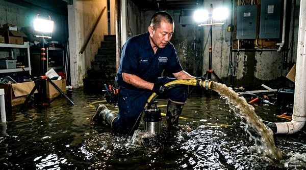
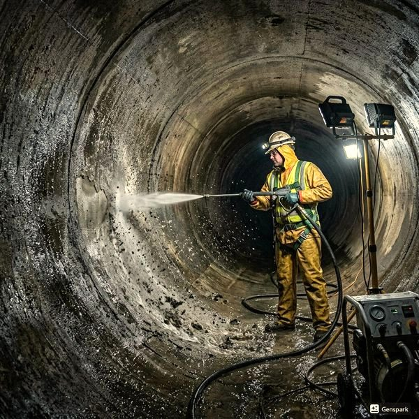
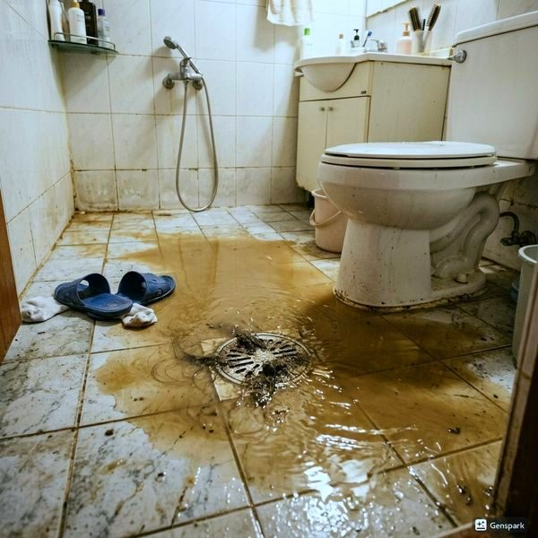

온돌(난방) 배관 관리와 누수 수리 가이드
2026년 4월 12일 | 제우스시설관리
한국 가정의 대부분은 온돌(바닥 난방) 시스템을 사용합니다. 바닥 아래 매설된 난방 배관에서 누수가 발생하면, 바닥을 뜯어내야 하는 대공사가 될 수 있습니다. 조기 발견과 예방적 관리가 매우 중요합니다.

온돌 배관 누수의 징후: ① 특정 바닥 부위가 따뜻하지 않음(순환 불량), ② 바닥에 습기가 차거나 변색됨, ③ 보일러 압력이 자주 떨어짐, ④ 보일러가 과열됨, ⑤ 수도 사용량이 갑자기 증가. 이런 증상이 있다면 즉시 점검이 필요합니다.
제우스시설관리는 비파괴 누수 탐지 기술로 바닥을 뜯지 않고 누수 지점을 정확히 찾아냅니다. 관로탐지기로 바닥 아래 배관 경로를 파악하고, 열화상 카메라와 청음 장비로 누수 위치를 특정합니다. 정확한 위치를 찾으면 최소한의 시공으로 수리가 가능합니다.

온돌 배관 수명은 설치 방식과 재질에 따라 다릅니다. PE관(폴리에틸렌)은 30~50년, PB관(폴리부틸렌)은 25~40년입니다. 10년 이상 된 배관은 정기 점검을 권장합니다. 보일러 난방수에 방청제를 주기적으로 보충하면 배관 수명을 연장할 수 있습니다.

겨울철 보일러 고장과 온돌 누수는 긴급 상황입니다. 제우스시설관리는 28분 내 출동하여 신속하게 진단하고 수리합니다. 전화: 010-4406-1788